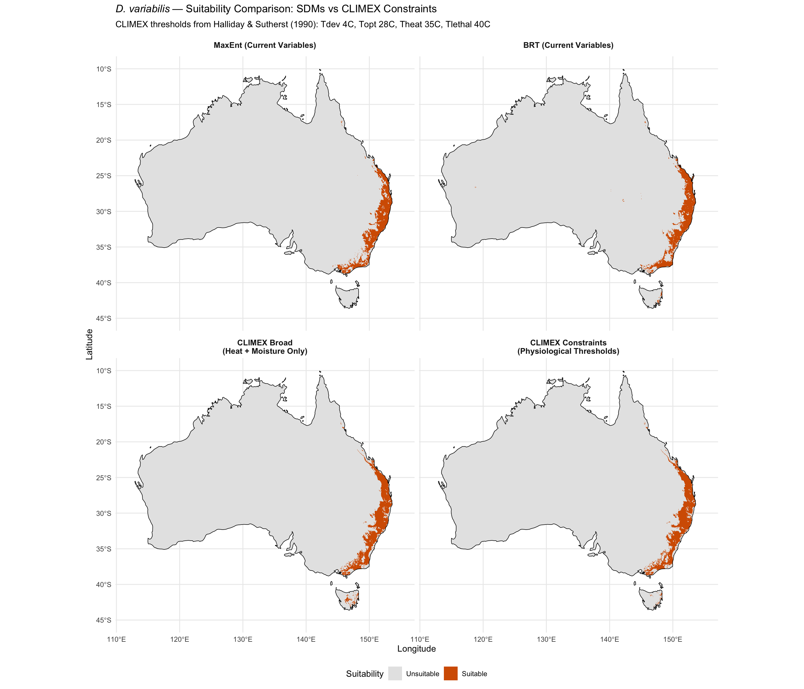

library(tidyverse)
library(terra)
library(sf)
library(rnaturalearth)
library(rnaturalearthdata)Step 10c: CLIMEX-Informed Constraint Mapping
Dermacentor variabilis Species Distribution Model
Overview
This script uses physiological thresholds from the 1990 Halliday & Sutherst CLIMEX study to create simple binary constraint maps for D. variabilis in Australia. Unlike correlative SDMs, this approach applies process-based physiological limits derived from the species’ known biology.
CLIMEX parameters from Halliday & Sutherst (1990):
- Lower developmental temperature threshold: 4C
- Optimal temperature: 28C
- Heat stress onset: 35C
- Upper lethal temperature: 40C
- Primary limiting factor in Australia: low summer humidity
This provides an independent baseline against which MaxEnt and BRT predictions can be evaluated.
NOTE — Variable naming: The WorldClim bioclimatic variables in this project’s env_stack_aus.tif are named by lexicographic sort order of files (bio_1, bio_10, bio_11, …, bio_2…) rather than numerical order, causing multi-digit variables to be relabelled. The relevant temperature variables in the stack are:
bio15= WorldClim bio_5 (Max Temperature of Warmest Month, °C)bio2= WorldClim bio_10 (Mean Temperature of Warmest Quarter, °C)bio16= WorldClim bio_6 (Min Temperature of Coldest Month, °C)
Temperature thresholds in this script use bio15 and bio2 (not bio5 and bio10, which are precipitation variables in this mislabelled stack).
1. Load environmental data
We need the full 21-variable environmental stack for Australia (not just selected variables) because CLIMEX thresholds apply to raw bioclim variables.
base_dir <- "~/Library/CloudStorage/OneDrive-CSIRO/OneDrive - Docs/01_Projects/SDM/Dvariabilis_SDM"
processed_dir <- file.path(base_dir, "processed_data")
figures_dir <- file.path(base_dir, "figures")
# Full environmental stack (all candidate variables)
env_aus_full <- rast(file.path(processed_dir, "env_stack_aus.tif"))
cat("Available variables:", paste(names(env_aus_full), collapse = ", "), "\n")
# Selected-variable predictions for comparison
pred_maxent <- rast(file.path(processed_dir, "pred_aus_maxent.tif"))
pred_brt <- rast(file.path(processed_dir, "pred_aus_brt.tif"))
thresholds <- readRDS(file.path(processed_dir, "model_thresholds.rds"))
# Australia boundary
aus <- ne_countries(country = "Australia", scale = "medium", returnclass = "sf")
# Check which bioclim variables are available
bioclim_vars <- names(env_aus_full)[grepl("^bio", names(env_aus_full))]
cat("Bioclim variables available:", paste(bioclim_vars, collapse = ", "), "\n")Available variables: bio1, bio2, bio3, bio4, bio5, bio6, bio7, bio10, bio11, bio12, bio13, bio14, bio15, bio16, bio17, aridity_idx, annual_PET, continentality, climate_moisture, PET_seasonality, vpd_annual
Bioclim variables available: bio1, bio2, bio3, bio4, bio5, bio6, bio7, bio10, bio11, bio12, bio13, bio14, bio15, bio16, bio17 2. Apply CLIMEX temperature constraints
# NOTE: Due to lexicographic file sort in 03_environmental_data.qmd, the correct
# temperature variables in this stack are:
# bio15 = WorldClim bio_5 (Max Temperature of Warmest Month, °C)
# bio2 = WorldClim bio_10 (Mean Temperature of Warmest Quarter, °C)
# Do NOT use bio5 or bio10 — those are precipitation variables in this stack.
# Constraint 1: Exclude where max warm-month temp > 40C (upper lethal)
if ("bio15" %in% names(env_aus_full)) {
heat_lethal <- env_aus_full[["bio15"]] <= 40
heat_stress <- env_aus_full[["bio15"]] <= 35
cat("Heat constraints applied using bio15 (= WorldClim bio_5: max temp warmest month, °C)\n")
} else {
stop("bio15 (max temp warmest month) not available in environmental stack")
}
# Constraint 2: Exclude where mean warmest quarter temp < 4C (below dev threshold)
# This is very unlikely in Australia but included for completeness
if ("bio2" %in% names(env_aus_full)) {
cold_dev <- env_aus_full[["bio2"]] >= 4
cat("Cold development constraint applied using bio2 (= WorldClim bio_10: mean temp warmest quarter, °C)\n")
} else {
stop("bio2 (mean temp warmest quarter) not available in environmental stack")
}
# Constraint 3: Warm-season activity window — at least moderate warmth
# Optimal temp is 28C, so require mean warmest quarter >= 15C for meaningful activity
warm_activity <- env_aus_full[["bio2"]] >= 15
# Summary
cat("\nTemperature constraint summary:\n")
vals_heat <- values(heat_lethal, na.rm = TRUE)
vals_stress <- values(heat_stress, na.rm = TRUE)
vals_cold <- values(cold_dev, na.rm = TRUE)
vals_warm <- values(warm_activity, na.rm = TRUE)
sprintf(" Heat lethal (bio15/WorldClim-bio5 <= 40C): %.1f%% of cells pass",
100 * sum(vals_heat) / length(vals_heat))
sprintf(" Heat stress (bio15/WorldClim-bio5 <= 35C): %.1f%% of cells pass",
100 * sum(vals_stress) / length(vals_stress))
sprintf(" Cold development (bio2/WorldClim-bio10 >= 4C): %.1f%% of cells pass",
100 * sum(vals_cold) / length(vals_cold))
sprintf(" Warm activity (bio2/WorldClim-bio10 >= 15C): %.1f%% of cells pass",
100 * sum(vals_warm) / length(vals_warm))Heat constraints applied using bio15 (= WorldClim bio_5: max temp warmest month, °C)
Cold development constraint applied using bio2 (= WorldClim bio_10: mean temp warmest quarter, °C)
Temperature constraint summary:
[1] " Heat lethal (bio15/WorldClim-bio5 <= 40C): 94.7% of cells pass"
[1] " Heat stress (bio15/WorldClim-bio5 <= 35C): 36.7% of cells pass"
[1] " Cold development (bio2/WorldClim-bio10 >= 4C): 100.0% of cells pass"
[1] " Warm activity (bio2/WorldClim-bio10 >= 15C): 99.2% of cells pass"3. Apply CLIMEX moisture constraints
The 1990 CLIMEX study identified low summer humidity as the primary factor preventing D. variabilis establishment in inland/western Australia.
# Use aridity index as primary moisture constraint
# Higher aridity_idx = more arid = less suitable
if ("aridity_idx" %in% names(env_aus_full)) {
aridity <- env_aus_full[["aridity_idx"]]
cat("Aridity index available\n")
} else {
# Fall back to selected-variable stack
env_aus_sel <- rast(file.path(processed_dir, "env_selected_aus.tif"))
aridity <- env_aus_sel[["aridity_idx"]]
cat("Using aridity_idx from selected variable stack\n")
}
# Calibrate aridity threshold using occurrence data
occ_env <- readRDS(file.path(processed_dir, "occurrences_with_env.rds"))
aridity_at_occ <- occ_env$aridity_idx
aridity_q05 <- quantile(aridity_at_occ, 0.05, na.rm = TRUE)
aridity_q95 <- quantile(aridity_at_occ, 0.95, na.rm = TRUE)
cat(sprintf("Aridity index at occurrences: range [%.1f, %.1f], 5th pctl = %.1f, 95th pctl = %.1f\n",
min(aridity_at_occ, na.rm = TRUE), max(aridity_at_occ, na.rm = TRUE),
aridity_q05, aridity_q95))
# Determine direction: is higher aridity good or bad?
# Thornthwaite aridity index: higher values = more arid
# Use 95th percentile as upper limit (species avoids very arid conditions)
moisture_ok <- aridity <= as.numeric(aridity_q95)
# Also apply precipitation constraint
if ("bio12" %in% names(env_aus_full)) {
precip <- env_aus_full[["bio12"]]
precip_at_occ <- occ_env$bio12
precip_q05 <- quantile(precip_at_occ, 0.05, na.rm = TRUE)
# Minimum annual precipitation
precip_ok <- precip >= as.numeric(precip_q05)
cat(sprintf("Minimum annual precipitation threshold (5th pctl): %.0f mm\n", precip_q05))
}
vals_moist <- values(moisture_ok, na.rm = TRUE)
vals_precip <- values(precip_ok, na.rm = TRUE)
sprintf(" Aridity constraint: %.1f%% of cells pass",
100 * sum(vals_moist) / length(vals_moist))
sprintf(" Precipitation constraint: %.1f%% of cells pass",
100 * sum(vals_precip) / length(vals_precip))Aridity index available
Aridity index at occurrences: range [0.0, 74.3], 5th pctl = 19.9, 95th pctl = 48.0
Minimum annual precipitation threshold (5th pctl): 9 mm
[1] " Aridity constraint: 5.0% of cells pass"
[1] " Precipitation constraint: 96.8% of cells pass"4. Intersect all constraints
# Conservative physiological envelope = ALL constraints must pass
climex_suitable <- heat_lethal & cold_dev & warm_activity & moisture_ok & precip_ok
names(climex_suitable) <- "climex_suitable"
# Less conservative = only heat lethal + moisture
climex_broad <- heat_lethal & moisture_ok & precip_ok
names(climex_broad) <- "climex_broad"
# Calculate areas
cell_areas <- cellSize(climex_suitable, unit = "km")
aus_total_area <- sum(values(cell_areas * !is.na(climex_suitable)), na.rm = TRUE)
climex_area <- sum(values(cell_areas * climex_suitable), na.rm = TRUE)
climex_broad_area <- sum(values(cell_areas * climex_broad), na.rm = TRUE)
sprintf("CLIMEX-informed suitable area:")
sprintf(" Conservative (all constraints): %.0f km2 (%.1f%% of Australia)",
climex_area, 100 * climex_area / aus_total_area)
sprintf(" Broad (heat lethal + moisture): %.0f km2 (%.1f%% of Australia)",
climex_broad_area, 100 * climex_broad_area / aus_total_area)[1] "CLIMEX-informed suitable area:"
[1] " Conservative (all constraints): 243962 km2 (3.2% of Australia)"
[1] " Broad (heat lethal + moisture): 253912 km2 (3.3% of Australia)"5. Comparison map — CLIMEX vs MaxEnt vs BRT
# Create binary maps for comparison
maxent_binary <- pred_maxent >= thresholds$maxent$maxss
brt_binary <- pred_brt >= thresholds$brt$maxss
# Convert all to data frames for plotting
climex_df <- as.data.frame(climex_suitable, xy = TRUE, na.rm = TRUE)
names(climex_df)[3] <- "suitable"
climex_df$model <- "CLIMEX Constraints\n(Physiological Thresholds)"
climex_broad_df <- as.data.frame(climex_broad, xy = TRUE, na.rm = TRUE)
names(climex_broad_df)[3] <- "suitable"
climex_broad_df$model <- "CLIMEX Broad\n(Heat + Moisture Only)"
maxent_df <- as.data.frame(maxent_binary, xy = TRUE, na.rm = TRUE)
names(maxent_df)[3] <- "suitable"
maxent_df$model <- "MaxEnt (Current Variables)"
brt_df <- as.data.frame(brt_binary, xy = TRUE, na.rm = TRUE)
names(brt_df)[3] <- "suitable"
brt_df$model <- "BRT (Current Variables)"
all_maps <- bind_rows(climex_df, climex_broad_df, maxent_df, brt_df)
all_maps$model <- factor(all_maps$model,
levels = c("MaxEnt (Current Variables)",
"BRT (Current Variables)",
"CLIMEX Broad\n(Heat + Moisture Only)",
"CLIMEX Constraints\n(Physiological Thresholds)"))
p <- ggplot() +
geom_raster(data = all_maps, aes(x = x, y = y, fill = factor(as.integer(suitable)))) +
geom_sf(data = aus, fill = NA, colour = "black", linewidth = 0.3) +
facet_wrap(~model, ncol = 2) +
scale_fill_manual(
values = c("0" = "grey90", "1" = "#D55E00"),
labels = c("Unsuitable", "Suitable"),
name = "Suitability"
) +
labs(
title = expression(italic("D. variabilis") ~ "— Suitability Comparison: SDMs vs CLIMEX Constraints"),
subtitle = "CLIMEX thresholds from Halliday & Sutherst (1990): Tdev 4C, Topt 28C, Theat 35C, Tlethal 40C",
x = "Longitude", y = "Latitude"
) +
theme_minimal(base_size = 11) +
theme(
strip.text = element_text(face = "bold", size = 10),
legend.position = "bottom"
) +
coord_sf(xlim = c(112, 155), ylim = c(-45, -10))
print(p)
ggsave(
file.path(figures_dir, "10c_climex_vs_sdm_comparison.png"),
p, width = 14, height = 12, dpi = 300
)6. Agreement analysis
# Where do all three approaches agree?
# Resample CLIMEX to match SDM resolution if needed
if (!compareGeom(climex_suitable, maxent_binary, stopOnError = FALSE)) {
climex_resampled <- resample(climex_suitable, maxent_binary, method = "near")
climex_broad_resampled <- resample(climex_broad, maxent_binary, method = "near")
} else {
climex_resampled <- climex_suitable
climex_broad_resampled <- climex_broad
}
# Agreement layers
agree_all <- maxent_binary & brt_binary & climex_resampled
agree_maxent_climex <- maxent_binary & climex_resampled
agree_brt_climex <- brt_binary & climex_resampled
agree_all_area <- sum(values(cell_areas * agree_all), na.rm = TRUE)
agree_mc_area <- sum(values(cell_areas * agree_maxent_climex), na.rm = TRUE)
agree_bc_area <- sum(values(cell_areas * agree_brt_climex), na.rm = TRUE)
maxent_area <- sum(values(cell_areas * maxent_binary), na.rm = TRUE)
brt_area <- sum(values(cell_areas * brt_binary), na.rm = TRUE)
cat("--- Agreement Analysis ---\n\n")
sprintf("MaxEnt suitable area: %.0f km2 (%.1f%%)", maxent_area, 100 * maxent_area / aus_total_area)
sprintf("BRT suitable area: %.0f km2 (%.1f%%)", brt_area, 100 * brt_area / aus_total_area)
sprintf("CLIMEX suitable area: %.0f km2 (%.1f%%)", climex_area, 100 * climex_area / aus_total_area)
cat("\n")
sprintf("MaxEnt AND CLIMEX agree: %.0f km2 (%.1f%%)", agree_mc_area, 100 * agree_mc_area / aus_total_area)
sprintf("BRT AND CLIMEX agree: %.0f km2 (%.1f%%)", agree_bc_area, 100 * agree_bc_area / aus_total_area)
sprintf("ALL THREE agree: %.0f km2 (%.1f%%)", agree_all_area, 100 * agree_all_area / aus_total_area)
cat("\n--- Interpretation ---\n")
cat("The BRT-CLIMEX agreement area represents the most conservative and defensible\n")
cat("estimate of climatic suitability. This is the area where:\n")
cat(" 1. The BRT model (better variable distribution) predicts suitability\n")
cat(" 2. CLIMEX physiological thresholds are met\n")
cat(" 3. Both independent methods converge\n")--- Agreement Analysis ---
[1] "MaxEnt suitable area: 217704 km2 (2.8%)"
[1] "BRT suitable area: 223710 km2 (2.9%)"
[1] "CLIMEX suitable area: 243962 km2 (3.2%)"
[1] "MaxEnt AND CLIMEX agree: 184702 km2 (2.4%)"
[1] "BRT AND CLIMEX agree: 187359 km2 (2.4%)"
[1] "ALL THREE agree: 168048 km2 (2.2%)"
--- Interpretation ---
The BRT-CLIMEX agreement area represents the most conservative and defensible
estimate of climatic suitability. This is the area where:
1. The BRT model (better variable distribution) predicts suitability
2. CLIMEX physiological thresholds are met
3. Both independent methods converge7. CLIMEX reference locations
Compare CLIMEX Ecoclimatic Index values from the 1990 paper with current SDM predictions at the same locations.
# Key locations from Halliday & Sutherst (1990)
ref_locations <- tibble(
city = c("Innisfail", "Lismore", "Sydney", "Melbourne", "Perth",
"Darwin", "Alice Springs", "Hobart"),
lon = c(146.03, 153.28, 151.21, 144.96, 115.86,
130.84, 133.88, 147.33),
lat = c(-17.53, -28.81, -33.87, -37.81, -31.95,
-12.46, -23.70, -42.88),
climex_EI = c(63, 43, NA, NA, NA, NA, NA, NA), # Published values
climex_note = c("Highest EI in Australia", "Comparable to Little Rock AR (EI=44)",
"Major population centre", "Major population centre",
"Dry climate", "Tropical", "Arid interior", "Cool temperate")
)
# Extract SDM predictions at reference locations
ref_pts <- vect(ref_locations, geom = c("lon", "lat"), crs = "EPSG:4326")
if (file.exists(file.path(processed_dir, "pred_aus_maxent.tif"))) {
ref_locations$maxent_pred <- extract(pred_maxent, ref_pts)[, 2]
ref_locations$brt_pred <- extract(pred_brt, ref_pts)[, 2]
ref_locations$climex_pass <- extract(climex_suitable, ref_pts)[, 2]
}
cat("CLIMEX reference locations — SDM predictions:\n")
ref_locations %>%
mutate(across(c(maxent_pred, brt_pred), ~round(., 3))) %>%
print(n = Inf)
# Save
write_csv(ref_locations, file.path(processed_dir, "climex_reference_locations.csv"))CLIMEX reference locations — SDM predictions:
# A tibble: 8 × 8
city lon lat climex_EI climex_note maxent_pred brt_pred climex_pass
<chr> <dbl> <dbl> <dbl> <chr> <dbl> <dbl> <lgl>
1 Innisfail 146. -17.5 63 Highest EI… 0.239 0.086 FALSE
2 Lismore 153. -28.8 43 Comparable… 0.555 0.745 TRUE
3 Sydney 151. -33.9 NA Major popu… 0.446 0.26 FALSE
4 Melbourne 145. -37.8 NA Major popu… 0.489 0.451 FALSE
5 Perth 116. -32.0 NA Dry climate 0.053 0.039 FALSE
6 Darwin 131. -12.5 NA Tropical NA NA NA
7 Alice Spri… 134. -23.7 NA Arid inter… 0.031 0.074 FALSE
8 Hobart 147. -42.9 NA Cool tempe… 0.173 0.22 FALSE 8. Summary
cat("======================================================\n")
cat(" CLIMEX CONSTRAINT MAPPING SUMMARY\n")
cat("======================================================\n\n")
cat("Physiological thresholds applied (Halliday & Sutherst 1990):\n")
cat(" - bio15 (WorldClim bio_5: max temp warmest month) <= 40C (upper lethal)\n")
cat(" - bio2 (WorldClim bio_10: mean temp warmest quarter) >= 4C (development threshold)\n")
cat(" - bio2 (WorldClim bio_10: mean temp warmest quarter) >= 15C (activity threshold)\n")
cat(" - Aridity within species' observed range\n")
cat(" - Annual precipitation >= 5th percentile of occurrence values\n\n")
cat("Area estimates:\n")
sprintf(" CLIMEX physiological: %.0f km2 (%.1f%%)", climex_area, 100 * climex_area / aus_total_area)
sprintf(" MaxEnt (current): %.0f km2 (%.1f%%)", maxent_area, 100 * maxent_area / aus_total_area)
sprintf(" BRT (current): %.0f km2 (%.1f%%)", brt_area, 100 * brt_area / aus_total_area)
sprintf(" BRT + CLIMEX agreement: %.0f km2 (%.1f%%)", agree_bc_area, 100 * agree_bc_area / aus_total_area)
cat("\nThe CLIMEX constraint map serves as an independent, physiologically-informed\n")
cat("baseline. If the BRT prediction aligns with CLIMEX constraints while MaxEnt\n")
cat("does not, this supports the hypothesis that MaxEnt's Bio1 reliance causes\n")
cat("over-prediction in Australia.\n")
# Save constraint rasters
writeRaster(climex_suitable, file.path(processed_dir, "climex_suitable_aus.tif"), overwrite = TRUE)
writeRaster(climex_broad, file.path(processed_dir, "climex_broad_aus.tif"), overwrite = TRUE)
sprintf("Saved CLIMEX constraint outputs")======================================================
CLIMEX CONSTRAINT MAPPING SUMMARY
======================================================
Physiological thresholds applied (Halliday & Sutherst 1990):
- bio15 (WorldClim bio_5: max temp warmest month) <= 40C (upper lethal)
- bio2 (WorldClim bio_10: mean temp warmest quarter) >= 4C (development threshold)
- bio2 (WorldClim bio_10: mean temp warmest quarter) >= 15C (activity threshold)
- Aridity within species' observed range
- Annual precipitation >= 5th percentile of occurrence values
Area estimates:
[1] " CLIMEX physiological: 243962 km2 (3.2%)"
[1] " MaxEnt (current): 217704 km2 (2.8%)"
[1] " BRT (current): 223710 km2 (2.9%)"
[1] " BRT + CLIMEX agreement: 187359 km2 (2.4%)"
The CLIMEX constraint map serves as an independent, physiologically-informed
baseline. If the BRT prediction aligns with CLIMEX constraints while MaxEnt
does not, this supports the hypothesis that MaxEnt's Bio1 reliance causes
over-prediction in Australia.
[1] "Saved CLIMEX constraint outputs"